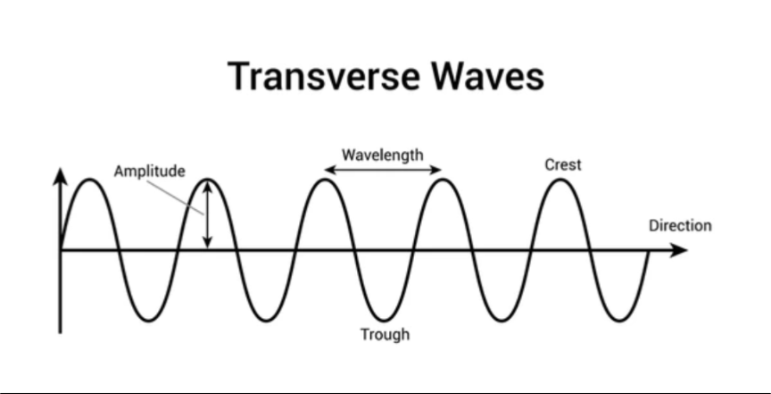
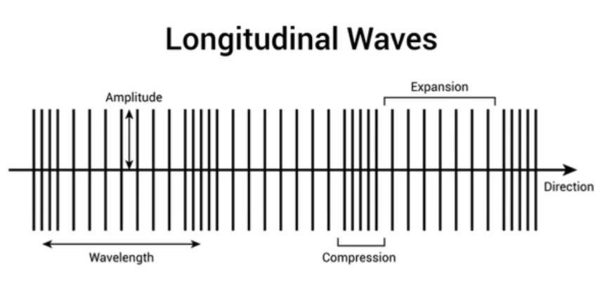
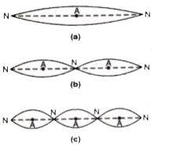
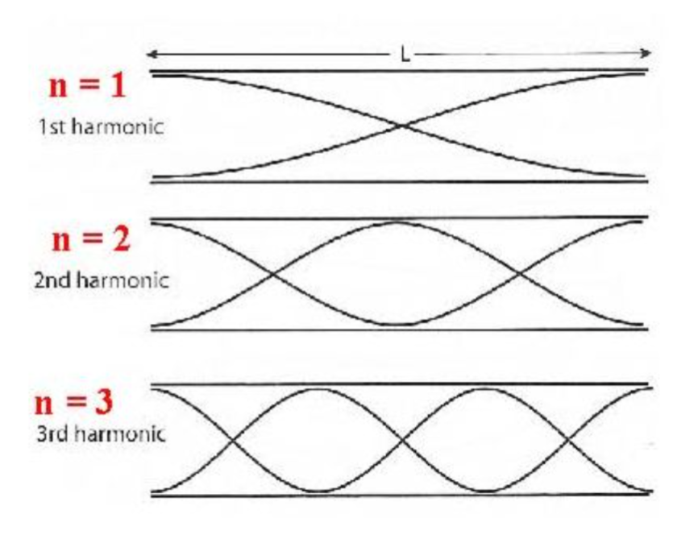
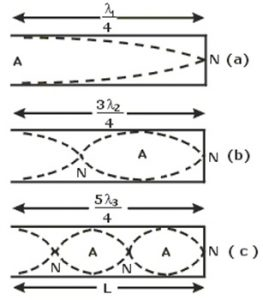
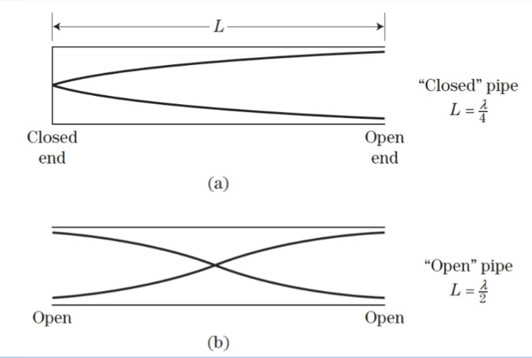

तरंग गति - किसी माध्यम में विक्षोभ के लगातार आगे बढ़ने की प्रक्रिया को तरंग गति कहते हैं। इसमें माध्यम के कण अपनी माध्य स्थिति के दोनों ओर कंपन करते हैं और ऊर्जा एक स्थान से दूसरे स्थान तक जाती है, पर पदार्थ नहीं जाता।
विशेषताएं -
1. तरंग गति में माध्यम के कण अपनी जगह पर कंपन करते हैं, स्वयं आगे नहीं बढ़ते।
2. इसमें ऊर्जा का स्थानांतरण होता है, पदार्थ का नहीं।
3. माध्यम में सभी कण एक के बाद एक समान गति दोहराते हैं, पर कला अलग-अलग होती है।
4. तरंग का वेग माध्यम की प्रत्यास्थता और जड़त्व पर निर्भर करता है।
5. दो तरंगों के मिलने पर अध्यारोपण का सिद्धांत लागू होता है।
1. आयाम (A) - तरंग गति में माध्यम के कणों का माध्य स्थिति से अधिकतम विस्थापन आयाम कहलाता है।
2. तरंगदैर्ध्य ($\lambda$) - एक ही कला में कंपन करने वाले दो निकटतम कणों के बीच की दूरी को तरंगदैर्ध्य कहते हैं। एक तरंग द्वारा एक आवर्तकाल में तय की गई दूरी भी तरंगदैर्ध्य कहलाती है।
3. आवर्तकाल (T) - माध्यम के किसी कण द्वारा एक पूर्ण कंपन करने में लिया गया समय आवर्तकाल कहलाता है।
4. आवृत्ति (n या $\nu$) - एक सेकंड में उत्पन्न तरंगों की संख्या या एक सेकंड में कण द्वारा किए गए कंपनों की संख्या को आवृत्ति कहते हैं। $n = \frac{1}{T}$
5. तरंग वेग (v) - तरंग द्वारा एक सेकंड में तय की गई दूरी को तरंग वेग कहते हैं। $v = n\lambda$
6. कला - किसी क्षण कण की स्थिति तथा गति की दिशा को बताने वाली राशि को कला कहते हैं।
तरंग - वह विक्षोभ जो माध्यम में बिना द्रव्य के स्थानांतरण के ऊर्जा का संचरण करता है, तरंग कहलाता है।
तरंग के प्रकार -
A. माध्यम के आधार पर -
1. विद्युत चुंबकीय तरंगें - जिन्हें संचरण के लिए माध्यम की आवश्यकता नहीं होती। जैसे - प्रकाश तरंग।
2. यांत्रिक तरंगें - जिन्हें संचरण के लिए माध्यम की आवश्यकता होती है। जैसे - ध्वनि तरंग।
B. कणों के कंपन के आधार पर -
1. अनुप्रस्थ तरंग - जिसमें माध्यम के कण तरंग संचरण की दिशा के लंबवत कंपन करते हैं। जैसे - रस्सी में तरंग।
2. अनुदैर्ध्य तरंग - जिसमें माध्यम के कण तरंग संचरण की दिशा के समानांतर कंपन करते हैं। जैसे - स्प्रिंग में तरंग, ध्वनि तरंग।
C. ऊर्जा संचरण के आधार पर -
1. प्रगामी तरंग - जो माध्यम में आगे बढ़ती है।
2. अप्रगामी तरंग - जो माध्यम में आगे नहीं बढ़ती, एक स्थान पर बनी रहती है।
विद्युत चुंबकीय तरंग - वे तरंगे जिन्हें संचरण के लिए किसी माध्यम की आवश्यकता नहीं होती और जो निर्वात में भी प्रकाश के वेग से चल सकती हैं, विद्युत चुंबकीय तरंगे कहलाती हैं। इनमें परस्पर लंबवत दोलन करते विद्युत और चुंबकीय क्षेत्र होते हैं।
जैसे - प्रकाश, रेडियो तरंग, X-किरणें।
विशेषताएं -
1. ये निर्वात में भी चल सकती हैं, इनका वेग $c = 3 \times 10^8$ m/s होता है।
2. ये अनुप्रस्थ प्रकृति की होती हैं।
3. ये त्वरित आवेशित कणों से उत्पन्न होती हैं।
4. इनमें ऊर्जा और संवेग होता है, ये विकिरण दाब डालती हैं।
5. इनका विद्युत क्षेत्र और चुंबकीय क्षेत्र एक-दूसरे के तथा संचरण दिशा के लंबवत होते हैं।
यांत्रिक तरंगे - वे तरंगे जिन्हें चलने के लिए किसी माध्यम जैसे ठोस, द्रव या गैस की जरूरत होती है, यांत्रिक तरंगे कहलाती हैं। ये खाली स्थान (निर्वात) में नहीं चल सकतीं।
उदाहरण - ध्वनि तरंगें, जल तरंगें, डोरी में उत्पन्न तरंगें।
ये निम्न दो प्रकार की होती है। -
1. अनुप्रस्थ तरंग
2. अनुदैर्ध्य तरंग
विशेषताएं -
1. इन्हें संचरण के लिए माध्यम चाहिए।
2. इनका वेग माध्यम के गुणों जैसे प्रत्यास्थता और जड़त्व पर निर्भर करता है। $v = \sqrt{E/\rho}$
3. ये ऊर्जा और संवेग का संचरण करती हैं, पदार्थ का नहीं।
वह तरंग जिसमें माध्यम के कण तरंग के संचरण की दिशा के लंबवत कंपन करते हैं, अनुप्रस्थ तरंग कहलाती है।
इसमें एक-एक करके श्रृंग (Crest) तथा गर्त (Trough) बनते हैं। दो क्रमागत श्रृंगों या गर्तों के बीच की दूरी तरंगदैर्ध्य $\lambda$ के बराबर होती है।
उदाहरण - रस्सी में उत्पन्न तरंग, जल की सतह पर उत्पन्न तरंग, प्रकाश तरंग।

शर्त - अनुप्रस्थ तरंगें केवल ठोसों में तथा द्रव की सतह पर उत्पन्न हो सकती हैं, गैसों में नहीं क्योंकि गैसों में दृढ़ता नहीं होती।
इनका संचरण माध्यम की दृढ़ता तथा जड़त्व पर निर्भर करता है।
अनुदैर्ध्य तरंग - वह तरंग जिसमें माध्यम के कण तरंग के संचरण की दिशा के समानांतर कंपन करते हैं, अनुदैर्ध्य तरंग कहलाती है।
इसमें एक-एक करके संपीडन (Compression) तथा विरलन (Rarefaction) बनते हैं। दो क्रमागत संपीडनों या विरलनों के बीच की दूरी तरंगदैर्ध्य $\lambda$ के बराबर होती है।
उदाहरण - स्प्रिंग में उत्पन्न तरंग, वायु में ध्वनि तरंग।

शर्त - अनुदैर्ध्य तरंगें ठोस, द्रव तथा गैस तीनों माध्यमों में उत्पन्न हो सकती हैं क्योंकि इनका संचरण माध्यम के आयतन प्रत्यास्थता पर निर्भर करता है।
इन तरंगों में माध्यम का घनत्व तथा दाब बदलता रहता है, संपीडन पर अधिक तथा विरलन पर कम होता है।
| क्र. | अनुप्रस्थ तरंग | अनुदैर्ध्य तरंग |
|---|---|---|
| 1. | इसमें कण संचरण दिशा के लंबवत कंपन करते हैं। | इसमें कण संचरण दिशा के समानांतर कंपन करते हैं। |
| 2. | इसमें श्रृंग तथा गर्त बनते हैं। | इसमें संपीडन तथा विरलन बनते हैं। |
| 3. | ये केवल ठोसों में और द्रव की सतह पर बनती हैं। | ये ठोस, द्रव, गैस तीनों में बनती हैं। |
| 4. | इसमें दाब और घनत्व में परिवर्तन नहीं होता। | इसमें दाब और घनत्व में परिवर्तन होता है। |
| क्र. | ध्वनि तरंगें | प्रकाश तरंगें |
|---|---|---|
| 1. | ये यांत्रिक तरंगें हैं। | ये विद्युत चुंबकीय तरंगें हैं। |
| 2. | इन्हें संचरण के लिए माध्यम की आवश्यकता होती है। | इन्हें संचरण के लिए माध्यम की आवश्यकता नहीं होती। |
| 3. | ये अनुदैर्ध्य तरंगें हैं। | ये अनुप्रस्थ तरंगें हैं। |
| 4. | इनका वेग कम होता है, लगभग $332 m/s$ वायु में। | इनका वेग बहुत अधिक होता है, $3 \times 10^8 m/s$। |
प्रगामी तरंग - वह तरंग जो माध्यम में एक बिंदु से दूसरे बिंदु तक लगातार आगे बढ़ती है तथा ऊर्जा का संचरण करती है, प्रगामी तरंग कहलाती है।
विशेषताएँ -
1. ये तरंगें माध्यम में एक निश्चित वेग से आगे बढ़ती हैं।
2. प्रगामी तरंग द्वारा ऊर्जा का संचरण एक स्थान से दूसरे स्थान तक होता है।
3. माध्यम का प्रत्येक कण माध्य स्थिति के दोनों ओर समान आयाम से कंपन करता है।
4. माध्यम के किसी भी कण की कला लगातार बदलती रहती है तथा एक-दूसरे से $\frac{2\pi}{\lambda} \times$ दूरी के बराबर कलांतर पर होते हैं।
5. ये दो प्रकार की होती हैं - अनुप्रस्थ प्रगामी तथा अनुदैर्ध्य प्रगामी।
अध्यारोपण का सिद्धांत - जब किसी माध्यम में दो या दो से अधिक तरंगें एक साथ एक ही स्थान पर पहुँचती हैं तो माध्यम के उस कण का परिणामी विस्थापन प्रत्येक तरंग द्वारा उत्पन्न अलग-अलग विस्थापनों के सदिश योग के बराबर होता है।
यदि $y_1, y_2, y_3...$ विस्थापन हैं तो परिणामी विस्थापन -
$y = y_1 + y_2 + y_3 + ...$
विशेष -
1. यह सिद्धांत केवल छोटी आयाम वाली तरंगों के लिए सत्य है।
2. बड़ी आयाम की तरंगों तथा प्रघाती तरंगों के लिए यह लागू नहीं होता।
3. अध्यारोपण के समय तरंगें अपना अस्तित्व बनाए रखती हैं, एक-दूसरे को प्रभावित नहीं करतीं।
4. इसी सिद्धांत के कारण व्यतिकरण, विस्पंद तथा अप्रगामी तरंगों की घटनाएँ होती हैं।
व्यतिकरण - जब समान आवृत्ति की दो ध्वनि तरंगें एक ही माध्यम में एक ही दिशा में संचरित होती हैं तो उनके अध्यारोपण से माध्यम के कुछ बिंदुओं पर ध्वनि की तीव्रता अधिकतम तथा कुछ बिंदुओं पर न्यूनतम हो जाती है, इस घटना को ध्वनि का व्यतिकरण कहते हैं।
प्रकार - यह दो प्रकार का होता है -
(1) सम्पोषी या रचनात्मक व्यतिकरण - जब दो ध्वनि तरंगें किसी बिन्दु पर समान कला में मिलती हैं तब उनकी परिणामी तीव्रता एवं आयाम अधिकतम हो जाते हैं। ऐसे व्यतिकरण को सम्पोषी व्यतिकरण कहते हैं।$ A_{max} = a_1 + a_2 $
शर्त -पथांतर $\Delta = n\lambda$
तथा कलांतर $\phi = 2n\pi${ जहाँ $n=0,1,2...$
(2) विनाशी व्यतिकरण - जब दो ध्वनि तरंगें किसी बिन्दु पर विपरीत कला में मिलती हैं तो उनकी परिणामी तीव्रता एवं आयाम न्यूनतम हो जाते हैं। ऐसे व्यतिकरण को विनाशी व्यतिकरण कहते हैं।$ A_{mim} = a_1 - a_2 $
शर्त -पथांतर $\Delta = (2n+1)\frac{\lambda}{2}$
कलांतर $\phi = (2n+1)\pi$ { जहाँ $n=0,1,2...$
माना समान आवृत्ति की दो तरंगों के आयाम $a_1$ व $a_2$ हैं तथा उनके बीच कलांतर $\phi$ है, तब -
अध्यारोपण से परिणामी विस्थापन -
यही परिणामी तरंग का विस्थापन समीकरण है।
जहां-
परिणामी आयाम - समीकरण (1) व (2) का वर्ग कर जोड़ने पर -
1. संपोषी व्यतिकरण के लिए $ \phi = 0$ अतः
$A_{max} = \sqrt{a_1^2 + a_2^2 + 2a_1 a_2 \cos 0^{\circ}}$
$A_{max} = \sqrt{a_1^2 + a_2^2 + 2a_1 a_2}$
$A_{max} = \sqrt{(a_1 + a_2)^2}$
$A_{max} = a_1 + a_2$
2. विनाशी व्यतिकरण के लिए $ \phi = \pi $ अतः
$A_{min} = \sqrt{a_1^2 + a_2^2 + 2a_1 a_2 \cos \pi}$
$A_{min} = \sqrt{a_1^2 + a_2^2 + 2a_1 a_2 (-1)}$
$A_{min} = \sqrt{a_1^2 + a_2^2 - 2a_1 a_2}$
$A_{min} = \sqrt{(a_1 - a_2)^2}$
$A_{min} = a_1 - a_2$
ध्वनि व्यतिकरण की शर्तें -
1. दोनों ध्वनि स्रोत कला-संबद्ध (Coherent) होने चाहिए अर्थात उनके बीच कलांतर नियत रहना चाहिए।
2. दोनों तरंगों की आवृत्ति लगभग समान होनी चाहिए नहीं तो तीव्रता में परिवर्तन इतना तेज होगा कि कान उसे नहीं पकड़ पाएगा।
3. दोनों तरंगों के आयाम लगभग बराबर होने चाहिए जिससे विनाशी व्यतिकरण में न्यूनतम तीव्रता लगभग शून्य हो सके और व्यतिकरण स्पष्ट दिखाई दे।
4. दोनों स्रोत एक-दूसरे के निकट होने चाहिए।
5. दोनों तरंगें एक ही दिशा में संचरित होनी चाहिए।
दिया है -
$\frac{I_1}{I_2} = \frac{1}{9}$
हम जानते हैं तीव्रता $\propto$ (आयाम)$^2$
$\frac{a_1^2}{a_2^2} = \frac{1}{9}$
$\frac{a_1}{a_2} = \frac{1}{3}$
माना -
$a_1 = k$
$a_2 = 3k$
संपोषी व्यतिकरण में -
$A_{max} = a_1 + a_2$
$A_{max} = k + 3k$
$A_{max} = 4k$
विनाशी व्यतिकरण में -
$A_{min} = a_2 - a_1$
$A_{min} = 3k - k$
$A_{min} = 2k$
अतः -
$\frac{I_{max}}{I_{min}} = \frac{A_{max}^2}{A_{min}^2}$
$\frac{I_{max}}{I_{min}} = \frac{(4k)^2}{(2k)^2}$
$\frac{I_{max}}{I_{min}} = \frac{16k^2}{4k^2}$
$\frac{I_{max}}{I_{min}} = \frac{4}{1}$
अतः $I_{max} : I_{min} = 4 : 1$
दिया है -
$\frac{I_{max}}{I_{min}} = \frac{4}{1}$
$\frac{(a_1+a_2)^2}{(a_1-a_2)^2} = \frac{4}{1}$
वर्गमूल लेने पर -
$\frac{a_1+a_2}{a_1-a_2} = \frac{2}{1}$
$a_1 + a_2 = 2a_1 - 2a_2$
$a_2 + 2a_2 = 2a_1 - a_1$
$3a_2 = a_1$
$\frac{a_1}{a_2} = \frac{3}{1}$
अतः आयामों का अनुपात 3:1 होगा।
अप्रगामी तरंग - जब समान आयाम तथा समान आवृत्ति की दो प्रगामी तरंगें एक ही माध्यम में विपरीत दिशाओं में चलती हैं तो उनके अध्यारोपण से बनी परिणामी तरंग जो माध्यम में आगे नहीं बढ़ती, अप्रगामी या स्थावर तरंग कहलाती है।
विशेषताएँ -
1. ये तरंगें माध्यम में आगे नहीं बढ़तीं, अपने ही स्थान पर स्थिर रहती हैं।
2. इनमें ऊर्जा का संचरण नहीं होता।
3. माध्यम के कुछ बिंदु जो हमेशा स्थिर रहते हैं, उन्हें निस्पंद (Node) कहते हैं।
4. निस्पंदों के बीच के बिंदु जहाँ आयाम अधिकतम होता है, उन्हें प्रस्पंद (Antinode) कहते हैं।
5. दो क्रमागत निस्पंदों या प्रस्पंदों के बीच की दूरी $\lambda/2$ होती है तथा एक निस्पंद व प्रस्पंद के बीच $\lambda/4$ होती है।
6. निस्पंदों को छोड़कर सभी कण कंपन करते हैं पर उनका आयाम अलग-अलग होता है, प्रस्पंद पर अधिकतम व निस्पंद पर शून्य।
| क्र. | प्रगामी तरंग | अप्रगामी तरंग |
|---|---|---|
| 1. | ये माध्यम में आगे बढ़ती हैं। | ये माध्यम में आगे नहीं बढ़तीं, स्थिर रहती हैं। |
| 2. | इनमें ऊर्जा का संचरण होता है। | इनमें ऊर्जा का संचरण नहीं होता। |
| 3. | माध्यम के सभी कण समान आयाम से कंपन करते हैं। | निस्पंद पर आयाम शून्य तथा प्रस्पंद पर अधिकतम होता है। |
| 4. | इसमें कोई कण स्थायी रूप से स्थिर नहीं रहता। | इसमें निस्पंद बिंदु हमेशा स्थिर रहते हैं। |
| 5. | सभी कणों की कला क्रम से बदलती है। | दो निस्पंदों के बीच सभी कण एक ही कला में होते हैं। |
प्रसामान्य विधा (Normal Mode) - जब कोई बद्ध माध्यम जैसे डोरी या वायु स्तंभ कंपन करता है तो उसमें केवल कुछ निश्चित आवृत्तियों की अप्रगामी तरंगें ही उत्पन्न हो सकती हैं। माध्यम के इन विशिष्ट कंपन पैटर्न को प्रसामान्य विधाएँ कहते हैं।
प्रत्येक विधा की अपनी निश्चित आवृत्ति होती है जिसे प्रसामान्य आवृत्ति या固有 आवृत्ति कहते हैं।
उदाहरण - $L$ लंबाई की दोनों सिरों पर बंधी डोरी में -
$\lambda_n = \frac{2L}{n}$ , $n=1,2,3,...$
$n_n = \frac{nv}{2L}$
जहाँ $n=1$ प्रथम विधा या मूल स्वरक, $n=2$ द्वितीय विधा या प्रथम अधिस्वरक कहलाता है।
इन विधाओं में निस्पंद व प्रस्पंदों की संख्या निश्चित होती है।

माना एक डोरी दोनों सिरों पर बंधी है, सिरों पर हमेशा निस्पंद बनते हैं। माना डोरी की लंबाई $L$, तनाव $T$, एकांक लंबाई का द्रव्यमान $m$ है तो तरंग वेग
$V = \sqrt{\frac{T}{m}}$....(1)
1. प्रथम विधा - इस विधा में डोरी एक ही खंड में कंपन करती है। दोनों सिरों पर निस्पंद और बीच में एक प्रस्पंद बनता है।
तब तरंगदैर्ध्य -
$\lambda_1 = 2L$
अतः आवृत्ति -
$n_1 = \frac{V}{\lambda_1}$
$n_1 = \frac{V}{2L} $
$n_1 = \frac{V}{2L}$
$n_1 = \frac{1}{2L}\sqrt{\frac{T}{m}}$ { समी. (1) से
इसे मूल स्वरक या प्रथम संनादी कहते है।
2. द्वितीय विधा - इस विधा में डोरी दो खंडों में कंपन करती है। तीन निस्पंद और दो प्रस्पंद बनते हैं।
तब तरंगदैर्ध्य -
$\lambda_2 = \frac{2L}{2} $
अतः आवृत्ति -
$n_2 = \frac{V}{\lambda_2}$
$n_2 = \frac{V}{2L/2} $
$n_2 = 2(\frac{V}{2L})$
$n_2 = \frac{2}{2L}\sqrt{\frac{T}{m}}= 2n_1$ { समी. (1) से
इसे प्रथम अधिस्वरक या द्वितीय संनादी कहते है।
3. तृतीय विधा - इस विधा में डोरी तीन खंडों में कंपन करती है। चार निस्पंद और तीन प्रस्पंद बनते हैं।
तब तरंगदैर्ध्य -
$\lambda_3 = \frac{2L}{3} $
अतः आवृत्ति -
$n_3 = \frac{V}{\lambda_3}$
$n_3 = \frac{V}{2L/3} $
$n_2 = 3(\frac{V}{2L})$
$n_3 = \frac{3}{2L}\sqrt{\frac{T}{m}}= 3n_1 $ { समी. (1) से
इसे द्वितीय अधिस्वरक या तृतीय संनादी कहते है।
इस प्रकार एक तनी हुई डोरी में सम तथा विषम दोनों प्रकार के संनादी उत्पन होते है।
आर्गन पाइप एक खोखली नली होती है जिसमें वायु स्तंभ के कंपन से ध्वनि उत्पन्न होती है। इसमें फूँक मारने पर वायु स्तंभ में अप्रगामी अनुदैर्ध्य तरंगें बनती हैं।
ये दो प्रकार के होते हैं।
1. खुला आर्गन पाइप - जो दोनों सिरों पर खुला होता है। इसमें दोनों सिरों पर प्रस्पंद बनते हैं। इसमें सम तथा विषम दोनों प्रकार के संनादी उत्पन्न होते हैं। इसकी मूल आवृत्ति $n_1 = \frac{V}{2L}$ होती है।
2. बंद आर्गन पाइप - जो एक सिरे पर बंद तथा दूसरे सिरे पर खुला होता है। इसमें बंद सिरे पर निस्पंद और खुले सिरे पर प्रस्पंद बनता है। इसमें केवल विषम संनादी उत्पन्न होते हैं। इसकी मूल आवृत्ति $n_1 = \frac{V}{4L}$ होती है।

माना एक खुले आर्गन पाइप की लंबाई $L$ है, दोनों खुले सिरों पर हमेशा प्रस्पंद बनते हैं। माना ध्वनि का वेग $V$ है।
$V$ = ध्वनि का वेग ....(1)
1. प्रथम विधा - इस विधा में पाइप एक ही खंड में कंपन करता है। दोनों सिरों पर प्रस्पंद और बीच में एक निस्पंद बनता है।
तब तरंगदैर्ध्य -
$\lambda_1 = 2L$
अतः आवृत्ति -
$n_1 = \frac{V}{\lambda_1}$
$n_1 = \frac{V}{2L} $
$n_1 = \frac{V}{2L}$
इसे मूल स्वरक या प्रथम संनादी कहते है।
2. द्वितीय विधा - इस विधा में पाइप दो खंडों में कंपन करता है। दो निस्पंद और तीन प्रस्पंद बनते हैं।
तब तरंगदैर्ध्य -
$\lambda_2 = \frac{2L}{2} $
अतः आवृत्ति -
$n_2 = \frac{V}{\lambda_2}$
$n_2 = \frac{V}{2L/2} $
$n_2 = 2(\frac{V}{2L})$
$n_2 = 2n_1$ { समी. (1) से
इसे प्रथम अधिस्वरक या द्वितीय संनादी कहते है।
3. तृतीय विधा - इस विधा में पाइप तीन खंडों में कंपन करता है। तीन निस्पंद और चार प्रस्पंद बनते हैं।
तब तरंगदैर्ध्य -
$\lambda_3 = \frac{2L}{3} $
अतः आवृत्ति -
$n_3 = \frac{V}{\lambda_3}$
$n_3 = \frac{V}{2L/3} $
$n_3 = 3(\frac{V}{2L})$
$n_3 = 3n_1 $
इसे द्वितीय अधिस्वरक या तृतीय संनादी कहते है।
इस प्रकार खुले आर्गन पाइप में सम तथा विषम दोनों प्रकार के संनादी उत्पन्न होते है तथा आवृत्तियों का अनुपात $n_1:n_2:n_3 = 1:2:3$ होता है।

माना एक बंद आर्गन पाइप की लंबाई $L$ है, बंद सिरे पर हमेशा निस्पंद तथा खुले सिरे पर प्रस्पंद बनता है। माना ध्वनि का वेग $V$ है।
$V$ = ध्वनि का वेग ....(1)
1. प्रथम विधा - इस विधा में पाइप एक ही खंड में कंपन करता है। बंद सिरे पर निस्पंद और खुले सिरे पर प्रस्पंद बनता है।
तब तरंगदैर्ध्य -
$\lambda_1 = 4L$
अतः आवृत्ति -
$n_1 = \frac{V}{\lambda_1}$
$n_1 = \frac{V}{4L} $
$n_1 = \frac{V}{4L}$
इसे मूल स्वरक या प्रथम संनादी कहते है।
2. द्वितीय विधा - इस विधा में पाइप में दो निस्पंद और दो प्रस्पंद बनते हैं।
तब तरंगदैर्ध्य -
$\lambda_2 = \frac{4L}{3} $
अतः आवृत्ति -
$n_2 = \frac{V}{\lambda_2}$
$n_2 = \frac{V}{4L/3} $
$n_2 = 3(\frac{V}{4L})$
$n_2 = 3n_1$
इसे प्रथम अधिस्वरक या तृतीय संनादी कहते है।
3. तृतीय विधा - इस विधा में पाइप में तीन निस्पंद और तीन प्रस्पंद बनते हैं।
तब तरंगदैर्ध्य -
$\lambda_3 = \frac{4L}{5} $
अतः आवृत्ति -
$n_3 = \frac{V}{\lambda_3}$
$n_3 = \frac{V}{4L/5} $
$n_3 = 5(\frac{V}{4L})$
$n_3 = 5n_1 $
इसे द्वितीय अधिस्वरक या पंचम संनादी कहते है।
इस प्रकार बंद आर्गन पाइप में केवल विषम संनादी $1,3,5,...$ ही उत्पन्न होते है तथा आवृत्तियों का अनुपात $n_1:n_2:n_3 = 1:3:5$ होता है।

माना खुली और बन्द दोनों ऑर्गन नलिकाओं की लंबाई $L$ है तथा ध्वनि का वेग $V$ है।
खुली ऑर्गन नलिका के लिए - खुली नलिका के दोनों सिरे खुले होते हैं, अतः दोनों सिरों पर प्रस्पंद बनते हैं। मूल स्वरक में नलिका एक ही खंड में कंपन करती है, बीच में एक निस्पंद बनता है।
तब तरंगदैर्ध्य -
$\lambda_o = 2L$
अतः आवृत्ति -
$n_o = \frac{V}{\lambda_o}$
$n_o = \frac{V}{2L}$ ....(1)
इसे खुली नलिका का मूल स्वरक कहते हैं।
बन्द ऑर्गन नलिका के लिए - बन्द नलिका का एक सिरा बन्द और एक खुला होता है। बन्द सिरे पर निस्पंद और खुले सिरे पर प्रस्पंद बनता है। मूल स्वरक में नलिका एक ही खंड में कंपन करती है।
तब तरंगदैर्ध्य -
$\lambda_c = 4L$
अतः आवृत्ति -
$n_c = \frac{V}{\lambda_c}$
$n_c = \frac{V}{4L}$ ....(2)
इसे बन्द नलिका का मूल स्वरक कहते हैं।
समी. (1) को समी. (2) से भाग देने पर -
$\frac{n_o}{n_c} = \frac{V/2L}{V/4L}$
$\frac{n_o}{n_c} = \frac{4L}{2L}$
$\frac{n_o}{n_c} = 2$
$n_o = 2n_c$
अतः सिद्ध हुआ कि समान लंबाई की खुली ऑर्गन नलिका में उत्पन्न मूल स्वरक की आवृत्ति, बन्द ऑर्गन नलिका के मूल स्वरक की आवृत्ति की दोगुनी होती है।
जब लगभग समान आवृत्ति की दो ध्वनि तरंगें एक साथ एक ही दिशा में संचरित होती हैं तो उनके अध्यारोपण से परिणामी ध्वनि की तीव्रता समय के साथ बारी-बारी से बढ़ती और घटती है। तीव्रता के इस उतार-चढ़ाव को विस्पंद कहते हैं। एक सेकंड में जितनी बार तीव्रता अधिकतम होती है वह विस्पंद आवृत्ति कहलाती है।
विस्पंद आवृत्ति $N = |n_1 - n_2|$
आवश्यक शर्तें -
1. दोनों ध्वनि तरंगों की आवृत्तियों में अंतर बहुत कम (10 से कम) होना चाहिए।
2. दोनों तरंगों के आयाम लगभग बराबर होने चाहिए।
3. दोनों तरंगें एक ही दिशा में संचरित होनी चाहिए।
उपयोग -
1. वाद्य यंत्रों को समस्वरित करने में।
2. अज्ञात आवृत्ति ज्ञात करने में।
3. खानों में खतरनाक गैसों का पता लगाने में।
4. प्रकाश में भी विस्पंद की घटना से प्रकाश का तरंगदैर्ध्य ज्ञात किया जाता है।
सिद्धांत - विस्पंद की आवृत्ति ध्वनि के वेग पर निर्भर करती है और ध्वनि का वेग गैस के घनत्व पर निर्भर करता है। शुद्ध वायु में ध्वनि का वेग अलग और खतरनाक गैस मिली वायु में वेग अलग होता है।
विधि - खान में दो एक जैसी सीटी रखी जाती हैं। एक सीटी में शुद्ध वायु भरी जाती है और दूसरी में खान की वायु भरी जाती है।
यदि खान की वायु शुद्ध है तो दोनों सीटियों की आवृत्ति समान होगी और कोई विस्पंद सुनाई नहीं देगा।
यदि खान में मीथेन जैसी खतरनाक गैस मिली है तो खान की वायु का घनत्व बदल जाता है जिससे उस सीटी में ध्वनि का वेग और आवृत्ति बदल जाती है। अब दोनों सीटियों की आवृत्ति में थोड़ा अंतर आ जाता है और विस्पंद सुनाई देने लगते हैं।
विस्पंद सुनाई देते ही खनिकों को खतरे का पता चल जाता है और वे खान से बाहर आ जाते हैं।
| क्र. | व्यतिकरण | विस्पंद |
|---|---|---|
| 1. | दोनों तरंगों की आवृत्ति बिल्कुल समान होती है। | दोनों तरंगों की आवृत्ति में थोड़ा सा अंतर होता है। |
| 2. | किसी बिंदु पर तीव्रता नियत रहती है, समय के साथ नहीं बदलती। | किसी बिंदु पर तीव्रता समय के साथ बदलती है, बारी-बारी से अधिकतम और न्यूनतम होती है। |
| 3. | तीव्रता में परिवर्तन स्थान के साथ होता है। | तीव्रता में परिवर्तन समय के साथ होता है। |
| 4. | संपोषी व्यतिकरण में तीव्रता अधिकतम और विनाशी में न्यूनतम होती है। | एक सेकंड में उत्पन्न विस्पंदों की संख्या दोनों आवृत्तियों के अंतर के बराबर होती है। $N = n_1 - n_2$ |
जब ध्वनि स्रोत और श्रोता के बीच सापेक्ष गति होती है तो श्रोता को सुनाई देने वाली ध्वनि की आवृत्ति स्रोत की वास्तविक आवृत्ति से अलग प्रतीत होती है। इसी घटना को डॉप्लर प्रभाव कहते हैं।
आभासी आवृत्ति $n' = n \left( \frac{V \pm v_o}{V \mp v_s} \right)$
सीमाएं -
1. यह तभी लागू होता है जब स्रोत और श्रोता का वेग ध्वनि के वेग से बहुत कम हो $(v_s, v_o \ll V)$।
2. माध्यम स्थिर होना चाहिए, माध्यम के बहने पर सूत्र बदल जाता है।
3. यह केवल अनुदैर्ध्य दिशा में गति के लिए है, अनुप्रस्थ गति में प्रभाव नगण्य होता है।
4. स्रोत और श्रोता का वेग प्रकाश के वेग की तुलना में बहुत कम होना चाहिए।
उपयोग -
1. तारों और आकाशगंगाओं की गति ज्ञात करने में।
2. रडार द्वारा वायुयान और पनडुब्बी की गति ज्ञात करने में।
3. SONAR में।
4. चिकित्सा में इकोकार्डियोग्राफी में रक्त प्रवाह की गति मापने में।